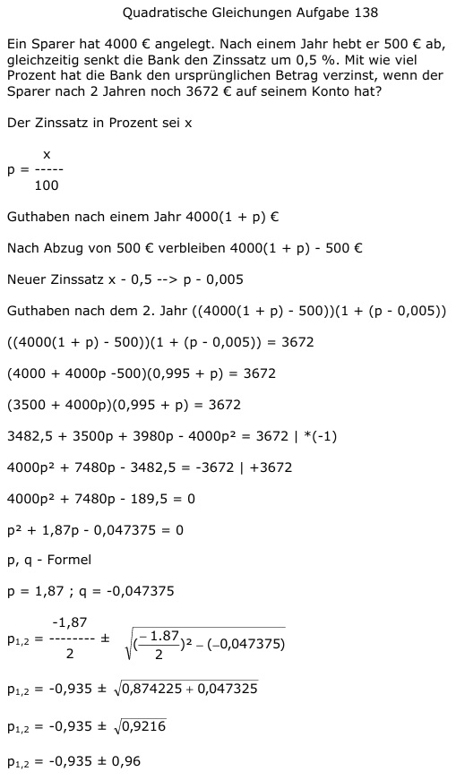

Aufgabe 139 Am Anfang eines Jahres befinden sich 2500 € auf einem Konto. Wie hoch ist der Zinssatz, wenn nach 2 Jahren 2652,25 € auf dem Konto sind und nichts abgehoben wurde? Der Zinssatz in Prozent sei x x p = ---- 100 Kontostand nach einem Jahr 2 500(1 + p) € Kontostand nach 2 Jahren 2500(1 + p)(1 + p) 2500 (1 + p)(1 + p) = 2652,25 2500(1 + p + p + p2) = 2652,25 2500 + 5000p + 2500p2 = 2652,25 |-2652,25 2500p2 + 5000p - 152,25 = 0 |:2500 p2 + 2p - 0,0609 = 0 p, q - Formel p = 2 ; q = -0,0609  p1,2 = -1 ± 1,03 p1 = -1 + 1,03 = 0,03 --> p = 3% p2 = -1 - 1,03 = -2,03 keine Lösung, negativer Zinssatz